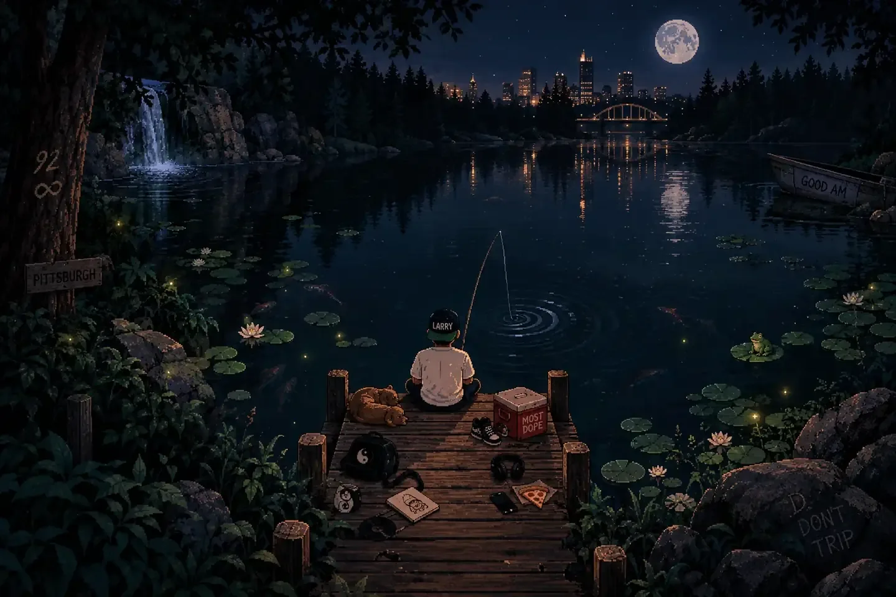
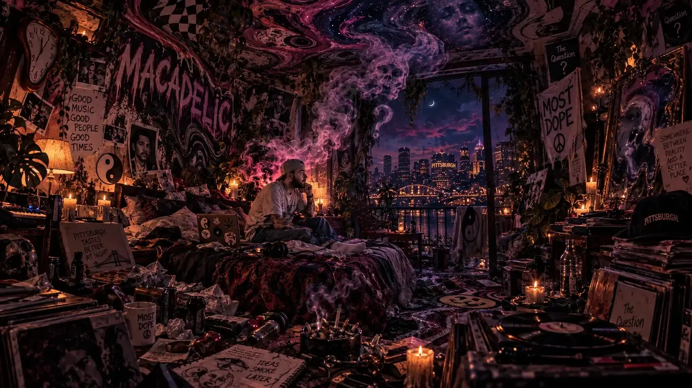
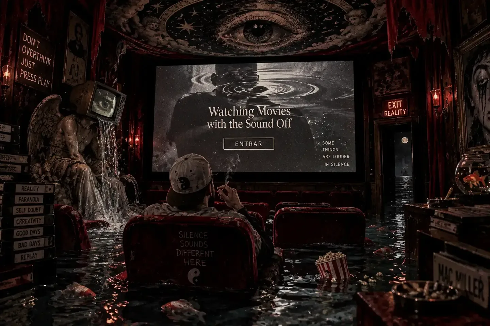
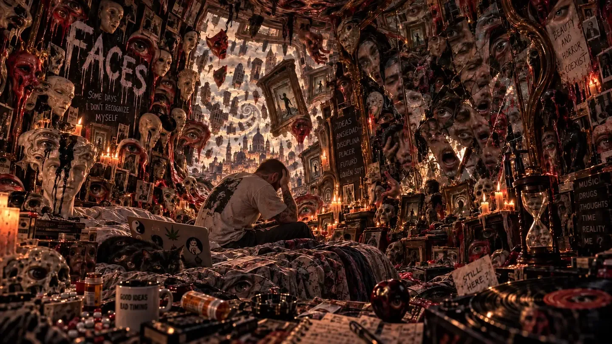
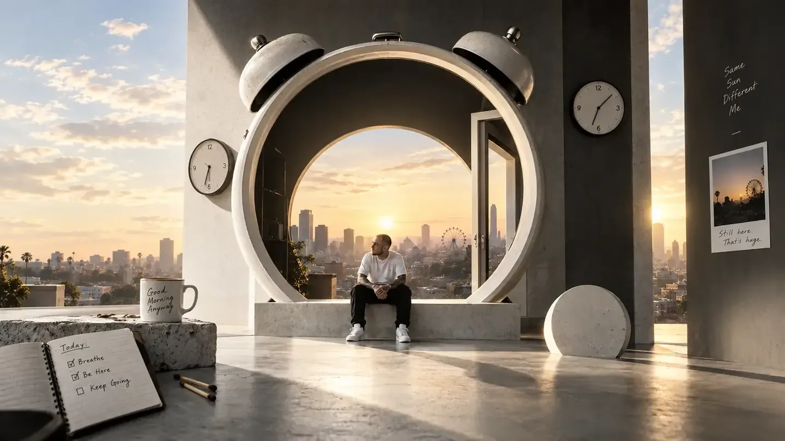
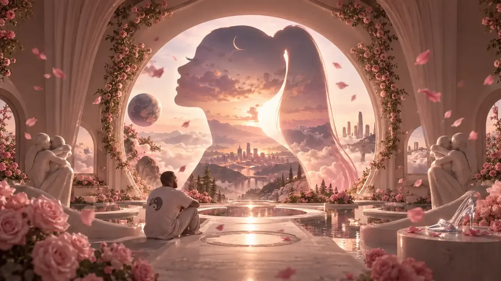
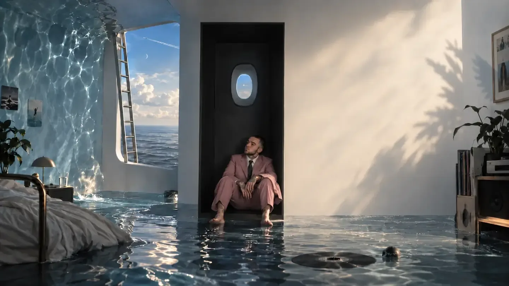
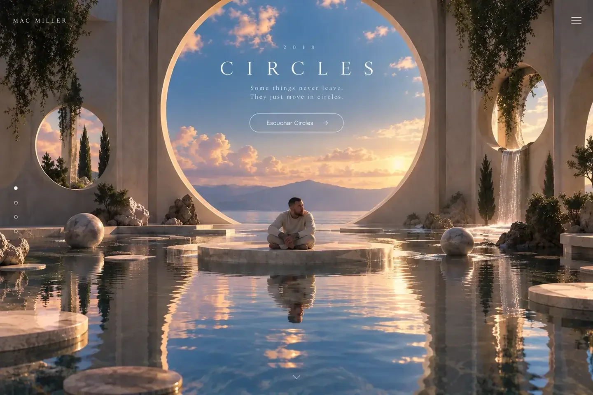
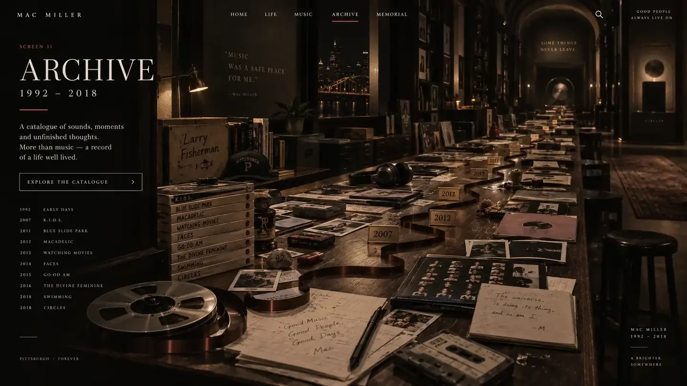
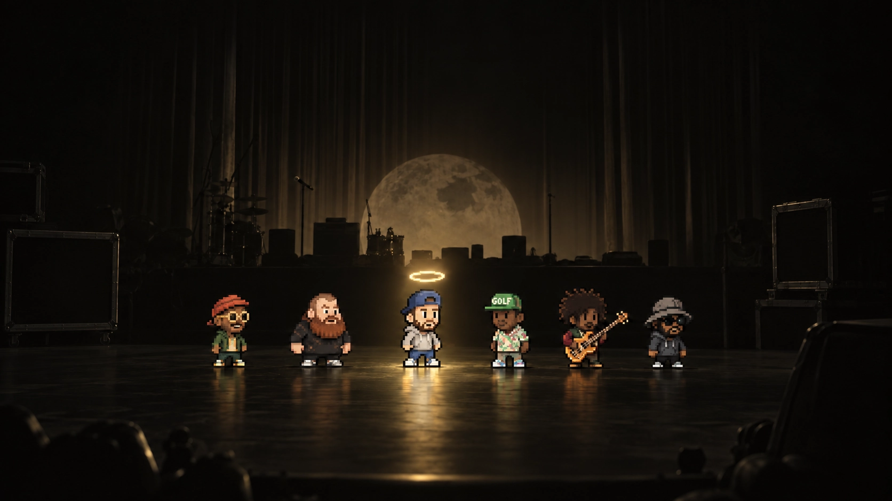

About
Malcolm James McCormick (1992–2018), conocido como Mac Miller, fue rapero, cantante, compositor y productor originario de Pittsburgh.
THE LONG WAY AROUND 11 SCENES


ARCHIVE NOTE · MACADELIC
En “The Question”, Mac decidió buscar a Lil Wayne aunque contó que normalmente no solía pedir colaboraciones.
Fuente ↗
ARCHIVE NOTE · WMWTSO
El intro nació de un beat de Earl Sweatshirt que Mac tomó, transformó y ajustó para que encajara con la visión completa del álbum.
Fuente ↗
ARCHIVE NOTE · FACES
Faces apareció en Mother's Day de 2014 con 24 canciones; para descargarla desde su web había que armar un sándwich digital.
Fuente ↗
ARCHIVE NOTE · GO:OD AM
GO:OD AM fue el primer álbum de Mac tras firmar con Warner Bros., después de construir su carrera inicial como artista independiente.
Fuente ↗
ARCHIVE NOTE · THE DIVINE FEMININE
La imagen de portada partió de una fotografía tomada por su hermano, Miller McCormick; Mac dijo que la foto resumía el concepto del disco.
Fuente ↗
ARCHIVE NOTE · SWIMMING
En su Tiny Desk de 2018, Mac interpretó material de Swimming frente a una audiencia; “2009” apareció acompañado por piano y cuarteto de cuerdas.
Fuente ↗
ARCHIVE NOTE · CIRCLES
Mac concibió Circles como un álbum hermano de Swimming. Tras su muerte, Jon Brion lo completó a partir del trabajo y conversaciones que habían compartido.
Fuente ↗
LARRY FISHERMAN
En 2013, Mac produjo la mixtape Stolen Youth de Vince Staples bajo su alias Larry Fisherman.
Fuente ↗PITTSBURGH
Blue Slide Park tomó su nombre del playground real de Frick Park, en Pittsburgh, un lugar ligado a la infancia de Mac.
Fuente ↗DISCOGRAPHY
Antes de los discos de Warner, K.I.D.S. fue una pieza clave de su etapa independiente; Pitchfork la describe como la piedra angular de ese primer crecimiento.
Fuente ↗THE SANCTUARY
Su estudio casero en Los Ángeles, The Sanctuary, funcionó como punto de encuentro para sesiones informales de “rap camp” con artistas de su círculo.
Fuente ↗“I'm hopin' not to join the 27 Club.”
BRAND NAME

11/11
CONTEXT
Malcolm James McCormick (1992–2018), conocido como Mac Miller, fue rapero, cantante, compositor y productor originario de Pittsburgh.
Su catálogo pasó del impulso juvenil de K.I.D.S. y Blue Slide Park a proyectos cada vez más experimentales como Watching Movies, Faces, GO:OD AM, The Divine Feminine, Swimming y Circles.
No existen futuras presentaciones de Mac Miller. Este sitio es un tributo póstumo; el archivo y los lanzamientos oficiales permanecen disponibles en su sitio oficial.
Sitio oficial ↗